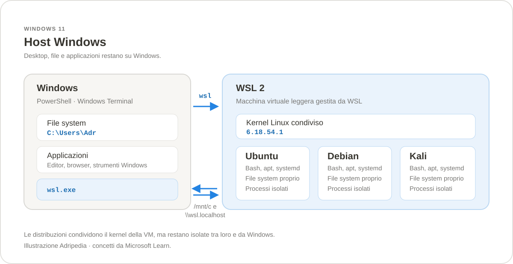

Sezione · Informatica
Windows Subsystem for Linux
WSL esegue un ambiente Linux dentro Windows, senza doppio avvio e senza
gestire una macchina virtuale tradizionale. Qui trovi l'installazione
su Windows, la scelta della distribuzione e i comandi per usarla ogni
giorno. Contenuti verificati su WSL 3.0.3.
3.0.3
(9 ottobre 2026), con kernel Linux 6.18.54.1. Il comando
di installazione rapida richiede Windows 10 versione 2004 (build
19041) o successiva, oppure Windows 11. WSL è un progetto open
source; la documentazione di riferimento è quella di Microsoft.

Che cos'è WSL
Windows Subsystem for Linux (WSL) è una funzionalità di Windows che permette di eseguire un ambiente Linux completo accanto a Windows. Si usa da Windows Terminal, PowerShell o dal prompt dei comandi: non serve creare una partizione, avviare un secondo sistema operativo o configurare a mano una macchina virtuale.
Dentro WSL trovi una shell Bash, i comandi GNU, un gestore di
pacchetti e qualsiasi strumento disponibile per la distribuzione
scelta: compilatori, runtime, database, server web e applicazioni
grafiche. I file Windows restano raggiungibili da Linux, e da
Windows puoi lanciare comandi Linux con wsl.
WSL 1 e WSL 2
WSL esiste in due architetture. WSL 2 è la versione predefinita e quella consigliata; WSL 1 resta utile in casi specifici. La differenza principale è che WSL 2 esegue un vero kernel Linux dentro una macchina virtuale leggera, mentre WSL 1 traduce le chiamate di sistema.
| Aspetto | WSL 1 | WSL 2 |
|---|---|---|
| Kernel | Nessun kernel Linux: layer di traduzione. | Kernel Linux reale, in una VM leggera gestita da WSL. |
| Chiamate di sistema | Supporto parziale. | Compatibilità completa. |
| File su Windows | Più veloce quando i progetti stanno su /mnt/c. |
Più lento attraverso i due file system. |
| File su Linux | Buono, ma non è il punto forte. | Molto più veloce: è la scelta consigliata per i progetti. |
| systemd | Non supportato. | Supportato, se abilitato in /etc/wsl.conf. |
| Virtualizzazione | Non richiede la VM Linux. | Richiede virtualizzazione e Virtual Machine Platform. |
| Docker | Non è il backend usato da Docker Desktop. | Backend predefinito di Docker Desktop su Windows. |
In pratica: installa WSL 2, tieni i progetti nel file system Linux e usa WSL 1 solo se devi lavorare per forza su file Windows o se hai un hardware molto vecchio senza virtualizzazione.
Come funziona WSL 2
WSL 2 avvia una macchina virtuale di utilità leggera, gestita automaticamente da Windows. Dentro la VM gira un solo kernel Linux, condiviso dalle distribuzioni installate. Ogni distribuzione ha però il proprio file system, i propri processi e le proprie impostazioni: puoi avere Ubuntu, Debian e Kali affiancate senza che si pestino i piedi.
La VM non compare come una macchina virtuale da amministrare: non devi
allocare dischi, configurare la rete o avviarla a mano. WSL la
accende quando serve e la spegne quando non la usi. Il kernel viene
aggiornato insieme a WSL, non con apt.
Cosa puoi fare
- Eseguire distribuzioni Linux come Ubuntu, Debian, Kali, Fedora, openSUSE e Alpine.
- Usare Bash,
grep,sed,awk,git,sshe gli altri strumenti da riga di comando. - Sviluppare in Python, Node.js, Go, Rust, C/C++, Java e molti altri linguaggi.
- Eseguire database e servizi come PostgreSQL, MySQL, Redis e Apache.
- Aprire applicazioni Linux con interfaccia grafica sul desktop Windows tramite WSLg.
- Usare la GPU per carichi di machine learning.
- Abilitare
systemde gestire i servizi come su una distribuzione normale. - Usare Docker Desktop, che su Windows si appoggia a WSL 2.
Dove tenere i file
La regola pratica è semplice: tieni i progetti nel
file system Linux se ci lavori da Linux. Ogni passaggio tra
Windows e Linux ha un costo, e su molti file piccoli la differenza
si sente. Il file system Linux di una distribuzione è visibile
da Windows tramite \\wsl.localhost.
| Dove sei | Percorso | Note |
|---|---|---|
| Linux | /home/<utente>/progetti |
Posizione consigliata per codice, repository e dipendenze. |
| Windows | C:\Users\<utente>\progetti |
Comodo per i file condivisi con applicazioni Windows. |
| Da Linux verso Windows | /mnt/c/Users/<utente>/progetti |
I dischi Windows sono montati sotto /mnt/. |
| Da Windows verso Linux | \\wsl.localhost\Ubuntu-24.04\home\<utente>\progetti |
In Esplora file; su alcuni sistemi funziona anche \\wsl$. |
Da Linux puoi aprire la cartella corrente in Esplora file con
explorer.exe .. Da Windows puoi eseguire un comando
Linux senza aprire una shell con wsl ls -la.
WSL, Docker e gli strumenti di sviluppo
Su Windows, Docker Desktop usa WSL 2 come backend predefinito: avere
WSL aggiornato è un requisito anche per i container. La
sezione Docker spiega
l'installazione e i comandi; qui basti sapere che i due strumenti
collaborano e che wsl --update risolve molti problemi
di avvio di Docker Desktop.
Con Windows Terminal puoi tenere PowerShell, Ubuntu e Debian in tab separate. Con l'estensione WSL di Visual Studio Code puoi aprire un progetto che vive nel file system Linux e usare il terminale integrato della distribuzione, senza copiare file da una parte all'altra.
Quando WSL non è la scelta giusta
WSL 2 non è un sostituto universale di un server Linux. Se devi compilare o modificare il kernel, accedere a hardware molto specifico, usare una distribuzione con un kernel personalizzato o riprodurre esattamente un ambiente di produzione, una macchina virtuale tradizionale o un server Linux vero restano più adatti. WSL eccelle nello sviluppo quotidiano su Windows, non nel ruolo di hypervisor generalista.
Fonti
Installazione su Windows
Su Windows l'installazione richiede pochi minuti: un comando abilita
le funzionalità necessarie, scarica WSL e installa Ubuntu.
La versione documentata è 3.0.3. La procedura
seguente vale solo per Windows: WSL non si installa
su Linux o macOS.
Requisiti
- Windows 10 versione 2004 (build 19041) o successiva, oppure Windows 11. Per il comando rapido
wsl --installserve questa base; le build precedenti richiedono l'installazione manuale. - Processore a 64 bit con virtualizzazione abilitata nel BIOS/UEFI. WSL 2 richiede anche SLAT (Second Level Address Translation).
- Privilegi di amministratore per abilitare le funzionalità di Windows.
- Connessione a Internet per scaricare WSL, il kernel e la distribuzione.
- Spazio su disco per WSL e per le distribuzioni; il disco virtuale predefinito può crescere fino a 1 TB, ma occupa solo lo spazio effettivamente usato.
- Windows aggiornato tramite Windows Update, con un riavvio disponibile se richiesto.
Per controllare la versione di Windows apri Impostazioni
› Sistema › Informazioni, oppure premi
Win + R e digita winver.
Metodo 1 — Un comando
- Apri PowerShell come amministratore: cerca PowerShell nel menu Start, fai clic destro e scegli Esegui come amministratore.
- Esegui il comando di installazione.
- Attendi il download e l'abilitazione delle funzionalità. Se viene richiesto, riavvia il computer.
- Al primo avvio della distribuzione crea un nome utente e una password Linux.
wsl --installIl comando abilita Windows Subsystem for Linux e Virtual Machine Platform, scarica WSL dal Microsoft Store e installa la distribuzione predefinita, cioè Ubuntu. Al termine potrebbe servire un riavvio.
-d:
wsl --list --online, poi
wsl --install -d Ubuntu-24.04.
Opzioni utili di wsl --install
| Opzione | Effetto |
|---|---|
--distribution <nome> | Sceglie la distribuzione da installare. Si può abbreviare con -d. |
--no-launch | Installa la distribuzione senza avviarla subito. |
--web-download | Scarica da Internet invece di usare il Microsoft Store; utile se lo Store è bloccato. |
--location <percorso> | Indica la cartella in cui installare la distribuzione. |
--no-distribution | Installa solo WSL, senza distribuzioni. |
--inbox | Installa la versione inclusa in Windows invece di quella del Microsoft Store. Gli aggiornamenti arrivano con Windows Update. |
--enable-wsl1 | Abilita anche WSL 1 durante l'installazione della versione Store. |
# elenca le distribuzioni disponibili
wsl --list --online
# installa Debian senza avviarla
wsl --install -d Debian --no-launch
# usa il download diretto se il Microsoft Store non funziona
wsl --install -d Ubuntu-24.04 --web-download
# installa solo WSL, senza alcuna distribuzione
wsl --install --no-distributionPrimo avvio
- Apri la distribuzione dal menu Start, oppure esegui
wslda PowerShell o Windows Terminal. - Attendi la decompressione dei file: il primo avvio può richiedere qualche minuto, i successivi sono quasi istantanei.
- Crea un nome utente Linux e una password. Non sono le credenziali di Windows e la password non viene mostrata mentre la digiti.
- Aggiorna i pacchetti della distribuzione.
# comandi da eseguire dentro Ubuntu o Debian
sudo apt update
sudo apt upgrade -ywsl -d Ubuntu-24.04 -u root passwd <utente>.
Sostituisci il nome della distribuzione e quello dell'utente con i
tuoi.
Verifica
# da PowerShell
wsl --version
wsl --status
wsl --list --verbose
# dentro la distribuzione
uname -a
cat /etc/os-release
whoami
wsl --version mostra la versione di WSL e dei suoi
componenti; wsl --list --verbose indica quali
distribuzioni sono installate, se sono in esecuzione e se usano WSL
1 o WSL 2. Se il comando wsl --version non esiste, hai
una versione molto vecchia: aggiorna con wsl --update.
Metodo 2 — Microsoft Store
In alternativa puoi installare Windows Subsystem for Linux dal Microsoft Store e poi aggiungere una o più distribuzioni dalla raccolta Linux. È lo stesso prodotto, ma la gestione degli aggiornamenti passa dallo Store. Dopo l'installazione apri la distribuzione almeno una volta per completare la configurazione.
Sulle versioni recenti trovi anche WSL Settings nel
menu Start: è l'interfaccia grafica per memoria, processori,
rete e altre impostazioni globali. Le stesse opzioni si possono
gestire con i file .wslconfig e wsl.conf.
Metodo 3 — Installazione manuale
Serve solo su build precedenti, in ambienti gestiti o quando
wsl --install non è disponibile. Da PowerShell
come amministratore abilita le due funzionalità:
dism.exe /online /enable-feature /featurename:Microsoft-Windows-Subsystem-Linux /all /norestart
dism.exe /online /enable-feature /featurename:VirtualMachinePlatform /all /norestart
Riavvia il computer. Poi installa il pacchetto WSL dalle
release ufficiali su GitHub
— scegli il file .msi per x64 o
ARM64 — oppure usa il Microsoft Store. Nelle build
più vecchie può servire anche il pacchetto di
aggiornamento del kernel da
aka.ms/wsl2kernel.
Infine imposta WSL 2 come versione predefinita:
wsl --set-default-version 2Se il comando segnala che la virtualizzazione non è attiva, abilitala nel BIOS/UEFI e riavvia. Su un computer virtuale bisogna abilitare la virtualizzazione annidata sull'host.
Aggiornare WSL
# aggiornamento normale, dal Microsoft Store
wsl --update
# download diretto, se lo Store non è raggiungibile
wsl --update --web-download
# anteprime: solo se sai cosa stai facendo
wsl --update --pre-release
# controllo della versione
wsl --version
L'aggiornamento di WSL è separato da quello della
distribuzione. I pacchetti Linux si aggiornano con
sudo apt update && sudo apt upgrade (o con il
gestore della tua distro).
Gestire le distribuzioni
| Operazione | Comando |
|---|---|
| Elencare quelle disponibili | wsl --list --online |
| Installarne una | wsl --install -d <distro> |
| Vedere quelle installate | wsl --list --verbose |
| Impostare quella predefinita | wsl --set-default <distro> |
| Passare una distro a WSL 2 | wsl --set-version <distro> 2 |
| Terminare una distro | wsl --terminate <distro> |
| Spegnere tutto WSL | wsl --shutdown |
| Rimuovere una distro | wsl --unregister <distro> |
wsl --unregister elimina
definitivamente la distribuzione, i suoi file, i pacchetti
installati e le impostazioni. Esporta un backup prima, se ci sono
dati che vuoi conservare.
Configurazione consigliata
Due file coprono quasi tutte le esigenze:
.wslconfig per le impostazioni globali della VM e
/etc/wsl.conf per la singola distribuzione. Dopo una
modifica esegui wsl --shutdown e riapri la distro.
Memoria e CPU — crea
%UserProfile%\.wslconfig:
[wsl2]
memory=8GB
processors=4
swap=2GBPer default WSL 2 può usare fino al 50% della memoria e tutti i processori logici. I limiti sono utili se Docker, database e IDE insieme mettono sotto pressione Windows.
systemd e utente predefinito — dentro la
distribuzione modifica /etc/wsl.conf:
[boot]
systemd=true
[user]
default=adriano
[interop]
appendWindowsPath=false
systemd=true abilita la gestione dei servizi come su
Linux. default imposta l'utente che viene usato
all'avvio. appendWindowsPath=false toglie i percorsi
Windows dal PATH Linux: è utile per evitare
conflitti, ma poi i programmi Windows vanno chiamati con
l'estensione .exe e il percorso completo.
Disinstallare
- Esporta ciò che ti serve e rimuovi le distribuzioni con
wsl --unregister <distro>. - Disinstalla le app delle distribuzioni da Impostazioni › App › App installate.
- Se non ti serve più WSL, disinstalla Windows Subsystem for Linux dalla stessa schermata.
# rimuove una distribuzione e tutti i suoi dati
wsl --unregister Ubuntu-24.04
# disabilita le funzionalità di Windows (solo se non servono più)
Disable-WindowsOptionalFeature -Online -FeatureName Microsoft-Windows-Subsystem-Linux -NoRestart
Disable-WindowsOptionalFeature -Online -FeatureName VirtualMachinePlatform -NoRestartLa rimozione della sola app WSL non cancella automaticamente i dischi virtuali delle distribuzioni. Controlla lo spazio e rimuovi i dati solo dopo averli esportati.
Problemi comuni
| Situazione | Cosa fare |
|---|---|
wsl --install mostra l'help |
WSL è già installato. Usa wsl --list --online e wsl --install -d <distro>. |
Errore 0x80370102 |
Virtualizzazione disattivata o Virtual Machine Platform mancante. Abilita la virtualizzazione nel BIOS/UEFI, installa la funzionalità e riavvia. |
Errore 0x8007019e |
La funzionalità Windows Subsystem for Linux non è attiva. Esegui i comandi DISM della sezione manuale e riavvia. |
Errore 0x1bc |
Il kernel di WSL 2 è vecchio o mancante. Esegui wsl --update e riprova. |
Installazione ferma a 0.0% |
Prova il download diretto: wsl --install --web-download -d <distro>. Controlla Store, proxy e connessione. |
wsl non riconosciuto |
Riapri il terminale dopo l'installazione. Verifica la build di Windows e, su ARM64, usa PowerShell Core o il prompt dei comandi. |
| La distro non compare | Avviala almeno una volta. Controlla di non stare usando l'account Administrator integrato o un altro account Windows. |
| Nessuna rete o VPN | Aggiorna WSL, esegui wsl --shutdown e riprova. In ambienti aziendali possono servire regole firewall o DNS tunneling. |
| WSL consuma troppa memoria | Limita memory in .wslconfig, poi wsl --shutdown. Controlla i processi con wsl --list --running. |
Fonti
Digita per filtrare la cheat sheet e i comandi qui sotto.
Cheat sheet
I comandi che servono più spesso, da PowerShell o dal prompt dei comandi.
| Comando | Cosa fa |
|---|---|
wsl --install | Installa WSL e la distribuzione predefinita (Ubuntu). |
wsl --install -d <distro> | Installa una distribuzione specifica. |
wsl --list --online | Elenca le distribuzioni disponibili. |
wsl --list --verbose | Elenca le distribuzioni installate, stato e versione WSL. |
wsl | Apre la distribuzione predefinita. |
wsl -d <distro> | Apre una distribuzione specifica. |
wsl --set-default <distro> | Imposta la distribuzione predefinita. |
wsl --set-default-version 2 | Imposta WSL 2 per le nuove distribuzioni. |
wsl --set-version <distro> 2 | Converte una distribuzione a WSL 2. |
wsl --update | Aggiorna WSL all'ultima versione. |
wsl --version | Mostra versione di WSL e componenti. |
wsl --status | Mostra configurazione, distro predefinita e kernel. |
wsl --shutdown | Spegne tutte le distribuzioni e la VM di WSL 2. |
wsl --terminate <distro> | Ferma una singola distribuzione. |
wsl --export <distro> <file.tar> | Esporta un backup della distribuzione. |
wsl --import <distro> <cartella> <file.tar> | Importa una distribuzione da un backup. |
wsl --unregister <distro> | Rimuove una distribuzione e tutti i suoi dati. |
wsl --mount <disco> | Monta un disco fisico in WSL 2. |
wsl --unmount <disco> | Smonta un disco montato. |
wsl --help | Mostra tutte le opzioni disponibili. |
<...> indica un valore da sostituire; le parentesi
quadre sono opzionali. I comandi wsl si eseguono da
Windows; quelli con sudo si eseguono dentro la
distribuzione Linux.
Primi passi
wsl --version
wsl --status
wsl --list --verbose
wsl
wsl --helpDistribuzioni
wsl --list --online
wsl --install -d Debian
wsl --install -d Ubuntu-24.04 --no-launch
wsl --install -d Ubuntu-24.04 --web-download
wsl --list
wsl --list --verbose
wsl --list --running
wsl --set-default Ubuntu-24.04
wsl --set-default-version 2
wsl --set-version Ubuntu-24.04 2
wsl --terminate Ubuntu-24.04
wsl --shutdownwsl --set-version può richiedere
tempo e, su distribuzioni grandi, conviene fare un backup prima.
Eseguire comandi
wsl ls -la
wsl pwd
wsl uname -a
wsl -d Debian -- uname -a
wsl -d Ubuntu-24.04 -u root
wsl --user root
wsl ~
wsl hostname -I
wsl sudo apt update
Tutto ciò che segue wsl viene eseguito come nella
distribuzione predefinita. I comandi con sudo
funzionano, e l'output resta nel terminale Windows.
File e interoperabilità
# dentro Linux: apri la cartella corrente in Esplora file
explorer.exe .
# dentro Linux: apri un file con un programma Windows
notepad.exe file.txt
# dentro Linux: i dischi Windows sono sotto /mnt
cd /mnt/c/Users
# da Windows: esegui un comando Linux nella cartella corrente
wsl ls -la
# da Windows: copia un file dentro la home Linux
wsl cp file.txt /home/<utente>/
In Esplora file il file system Linux si raggiunge con
\\wsl.localhost\<distro>\home\<utente>.
Per le prestazioni, tieni i repository nel file system Linux e non
sotto /mnt/c.
Backup, export e import
# ferma la distribuzione prima del backup
wsl --terminate Ubuntu-24.04
# esporta in TAR
wsl --export Ubuntu-24.04 D:\backup\ubuntu.tar
# esporta in VHDX (solo WSL 2)
wsl --export Ubuntu-24.04 D:\backup\ubuntu.vhdx --vhd
# importa una copia
wsl --import Ubuntu-copia D:\WSL\Ubuntu-copia D:\backup\ubuntu.tar
# importa una copia da VHDX
wsl --import Ubuntu-copia D:\WSL\Ubuntu-copia D:\backup\ubuntu.vhdx --vhd
# rimuove la copia e i suoi dati
wsl --unregister Ubuntu-copiawsl --unregister è irreversibile: elimina la
distribuzione e tutto ciò che contiene. Usalo solo dopo aver
verificato il backup.
Configurazione
File globale %UserProfile%\.wslconfig:
[wsl2]
memory=8GB
processors=4
swap=2GBFile per distribuzione /etc/wsl.conf:
[boot]
systemd=true
[user]
default=adriano
[interop]
appendWindowsPath=false# applica le modifiche: ferma tutto e riapri la distro
wsl --shutdownRete
# indirizzo IP della distribuzione WSL 2
wsl hostname -I
# indirizzo del host Windows visto da Linux
ip route show | grep -i default | awk '{ print $3 }'
# riavvia la rete dopo una modifica a .wslconfig
wsl --shutdown
Con la rete NAT predefinita i servizi in ascolto su
localhost in WSL sono raggiungibili da Windows. Se usi
VPN o firewall aziendali e la rete non funziona, aggiorna WSL e
verifica le impostazioni di rete in WSL Settings.
Dischi
wsl --mount \\.\PHYSICALDRIVE1
wsl --mount \\.\PHYSICALDRIVE1 --partition 2
wsl --mount \\.\PHYSICALDRIVE1 --bare
wsl --unmount \\.\PHYSICALDRIVE1
wsl --unmount
Il montaggio di dischi fisici richiede privilegi di amministratore.
--bare collega il disco senza montarlo, utile per
gestire partizioni o file system non supportati automaticamente.
Manutenzione
wsl --update
wsl --update --web-download
wsl --version
wsl --list --running
wsl --shutdown
# dentro Ubuntu o Debian
sudo apt update
sudo apt upgrade -y
sudo apt autoremove -ySe qualcosa va storto
| Situazione | Comando o controllo |
|---|---|
| Versione e stato | wsl --version e wsl --status |
| Distro installate | wsl --list --verbose |
| Distro in esecuzione | wsl --list --running |
| Riavvio completo | wsl --shutdown |
| Virtualizzazione attiva | Get-ComputerInfo -Property HyperVRequirementVirtualizationFirmwareEnabled |
| Hypervisor attivo | bcdedit /enum | findstr -i hypervisorlaunchtype |
| Funzionalità WSL | Get-WindowsOptionalFeature -Online -FeatureName Microsoft-Windows-Subsystem-Linux |
| Kernel e componenti | wsl --update, poi wsl --version |